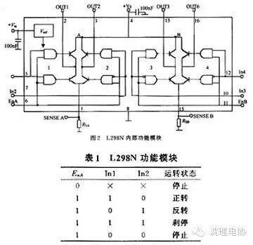
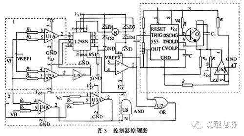
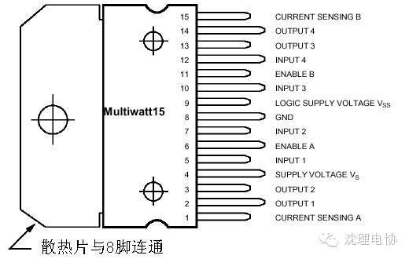
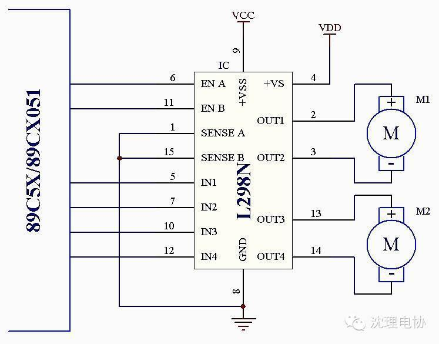

使用小程序
恒压恒流桥式2A驱动芯片L298N
L298是SGS公司的产品，比较常见的是15脚Multiwatt封装的L298N，内部同样包含4通道逻辑驱动电路。可以方便的驱动两个直流电机，或一个两相步进电机。
L298N芯片可以驱动两个二相电机，也可以驱动一个四相电机，输出电压最高可达50V，可以直接通过电源来调节输出电压；可以直接用单片机的IO口提供信号；而且电路简单，使用比较方便。
L298N可接受标准TTL逻辑电平信号VSS，VSS可接4．5～7 V电压。4脚VS接电源电压，VS电压范围VIH为＋2．5～46 V。输出电流可达2．5 A，可驱动电感性负载。1脚和15脚下管的发射极分别单独引出以便接入电流采样电阻，形成电流传感信号。L298可驱动2个电动机，OUT1，OUT2和OUT3，OUT4之间可分别接电动机，本实验装置我们选用驱动一台电动机。5，7，10，12脚接输入控制电平，控制电机的正反转。EnA，EnB接控制使能端，控制电机的停转。表1是L298N功能逻辑图。

In3，In4的逻辑图与表1相同。由表1可知EnA为低电平时，输入电平对电机控制起作用，当EnA为高电平，输入电平为一高一低，电机正或反转。同为低电平电机停止，同为高电平电机刹停。
L298N控制器原理如下：
图3是控制器原理图，由3个虚线框图组成。

（1）虚线框图1控制电机正反转，U1A，U2A是比较器，VI来自炉体压强传感器的电压。当VI＞VRBF1时，U1A输出高电平，U2A输出高电平经反相器变为低电平，电机正转。同理VI＜VRBF1时，电机反转。电机正反转可控制抽气机抽出气体的流量，从而改变炉体压强。
（2）虚线框图2中，U3A，U4A两个比较器组成双限比较器，当VB＜VI＜VA时输出低电平，当VI＞VA，VI＜VB时输出高电平。VA，VB是由炉体压强转感器转换电压的上下限，即反应炉体压强控制范围。根据工艺要求，我们可自行规定VA，VB的值，只要炉体压强在VA，VB所确定范围之间电机停转（注意VB＜VRBF1＜VA，如果不在这个范围内，系统不稳定）。
（3）虚线框图3是一个长延时电路。U5A是一个比较器，Rs1是采样电阻，VRBF2是电机过流电压。Rs1上电压大于VREF2，电机过流，U5A输出低电平。由上面可知，框图1控制电机正反转，框图2控制炉体压强的纹波大小。当炉体压强太小或太大时，电动机转到两端固定位置停止，根据直流电机稳态运行方程[3]：
U＝CeФN＋RaIa
其中:Ф为电机每极磁通量
Ce为电动势常数；
N为电机转数；
Ia为电枢电流；
Ra电枢回路电阻。
电机转数N为0，电机的电流急剧增加，时间过长将会使电机烧坏。但电机起动时，电机中线圈中的电流也急剧变大，因此我们必须把这两种状态分开。长延时电路可把这两种状态区分出来。长延时电路工作原理：当Rs1过流U5A产生一个负脉冲经过微分后，脉冲触发555的2脚，电路置位，3脚输出高电平，由于放电端7脚开路，C1，R5及U6A组成积分器开始积分，电容C1上的充电电压线性上升，延时运放积分常数为100R5C1。当C1上充电电压，即6脚电压超过2／3 VCC，555电路复位，输出低电平。电机启动时间一般小于0．8 s，C1充电时间一般为0．8～1 s。U5A输出电平与555的3脚输出电平经U7相或，如果U5A输出低电平大于C1充电时间，U7在C1充电后输出低电平由与门U8输入到L298N的6脚ENA端使电机停止。如果U5A的输出电平小于C1充电时间，6脚不动作电机的正常启动。长延时电路吸收电机启动过流电压波形，从而使电机正常启动。
下图是其引脚图：

